COMSOC in the Desert:
9th International Workshop on Computational Social Choice (COMSOC 2023)
Ben-Gurion University of the Negev, Beersheba, Israel, 3-5 July 2023
Important Dates!
All dates are 23:59 anywhere on Earth
| February 1 | : | Submissions open |
| March 10 | : | Abstract submission deadline |
| March 15 | : | Deadline for submissions of full papers |
Due to multiple requests, we will leave the server open for 3 more days |
||
| May 14 | : | Acceptance decisions |
| June 11 | : | Deadline for conference registration |
| July 3-5 | : | COMSOC conference |
About COMSOC@BGU 2023
Computational social choice is a discipline at the interface of social choice theory and computer science. It is concerned with the application of computational techniques to the study of social choice mechanisms, and with the integration of social choice paradigms into computing (read more).
The 9th International Workshop on Computational Social Choice (COMSOC) will take place on 3-5 July 2023, at Ben-Gurion University of the Negev, Beersheba, Israel. The aim of the workshop is to bring together different communities: computer scientists interested in computational issues in social choice; people working in artificial intelligence and multiagent systems who are using ideas from social choice to organize societies of artificial software agents; logicians interested in the logic-based specification and analysis of social procedures; computer science theorists analyzing algorithmic properties of social phenomena; and — last but not least — people coming from social choice theory itself: economists, mathematicians, and political scientists.
Funding Support
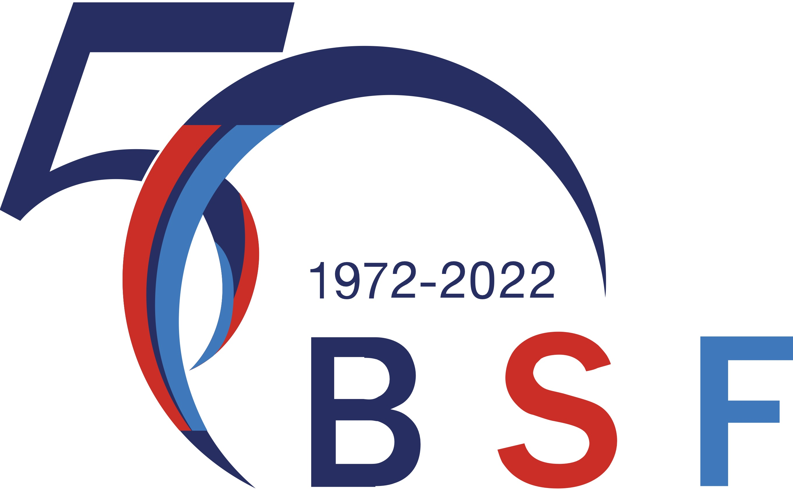 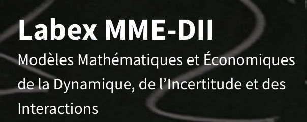 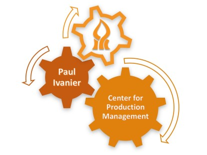
Event Photographs
Click on a thumbnail to open the photo in full resolution.
| 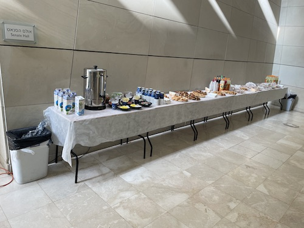 | 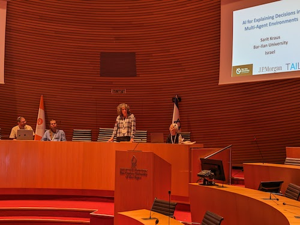 | 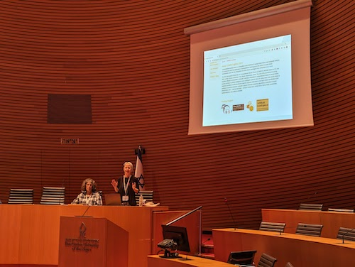 | 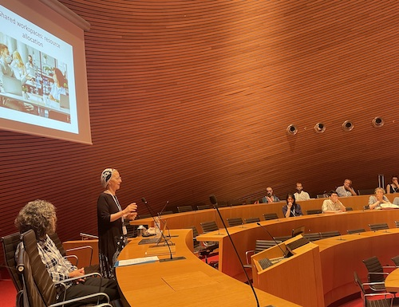 | 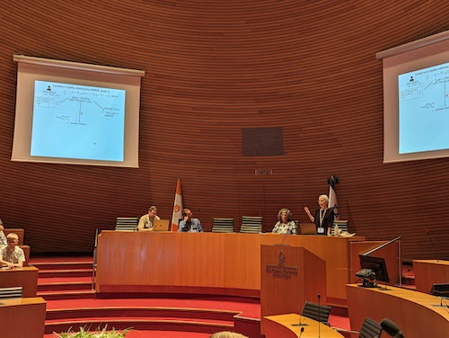 |
| 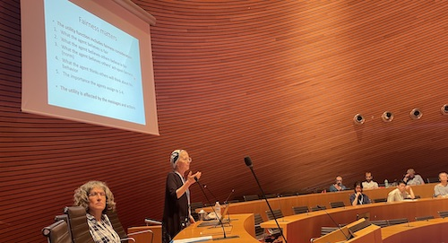 | 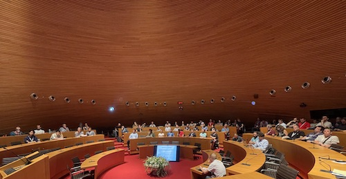 | 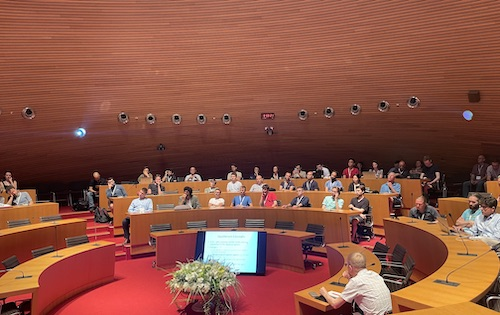 | 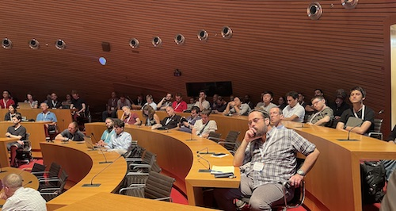 | 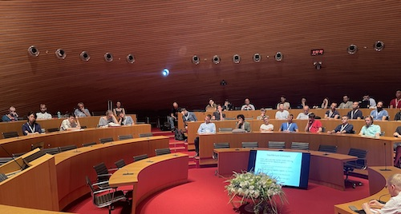 |
| 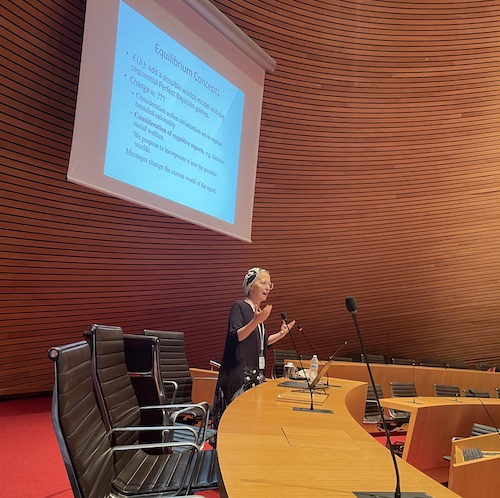 | 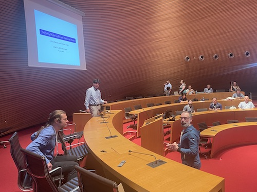 | 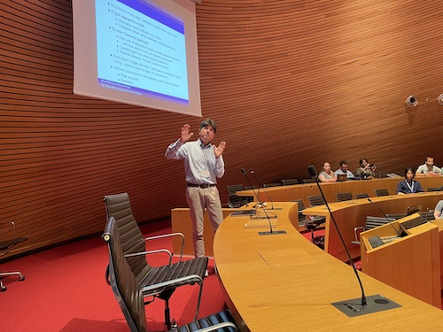 | 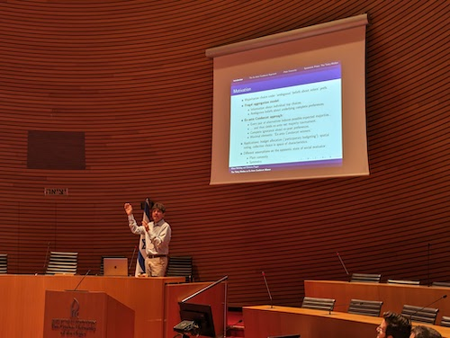 | 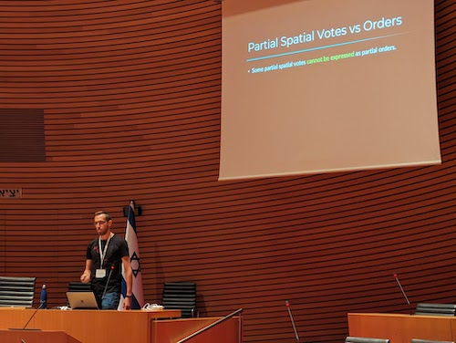 |
| 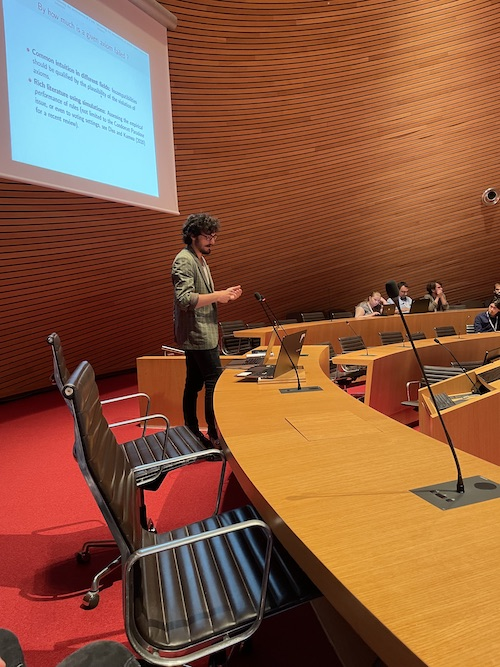 | 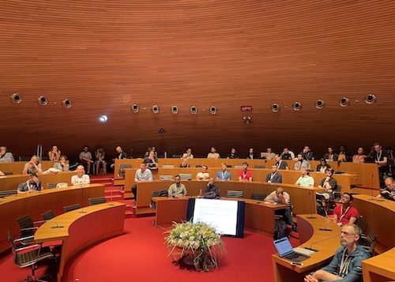 | 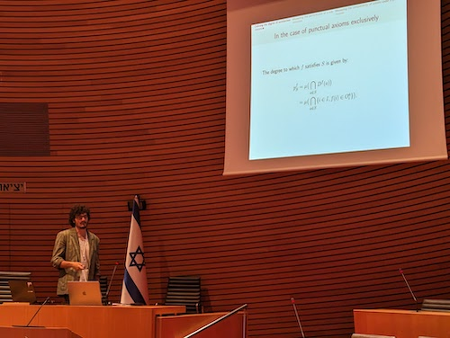 | 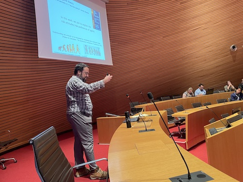 | 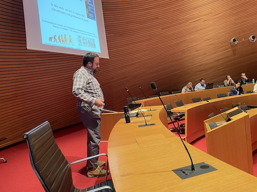 |
| 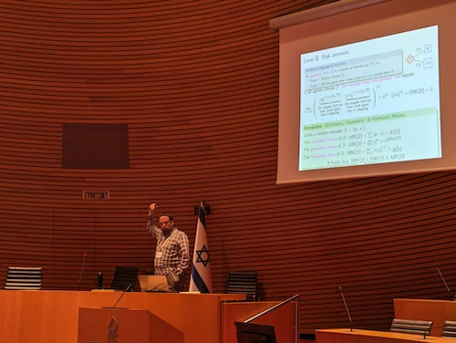 | 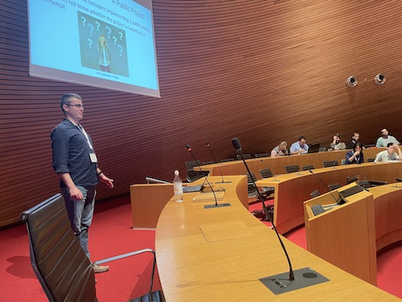 | 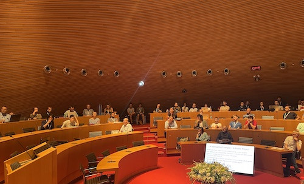 | 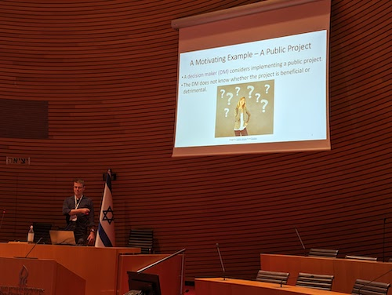 | 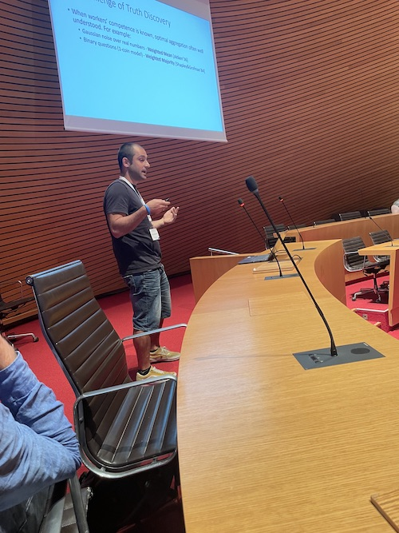 |
| 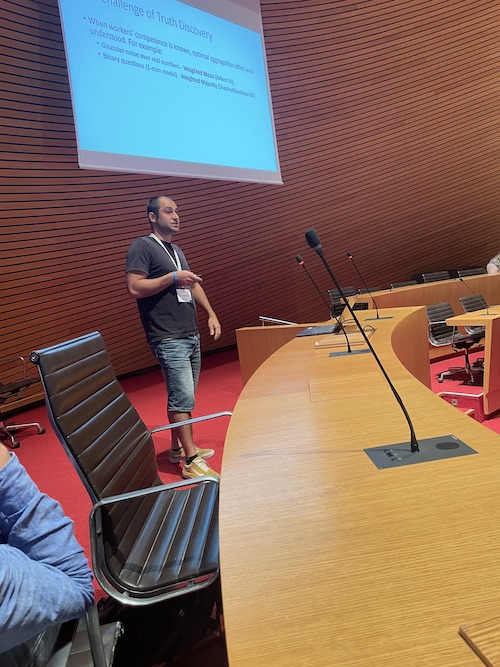 | 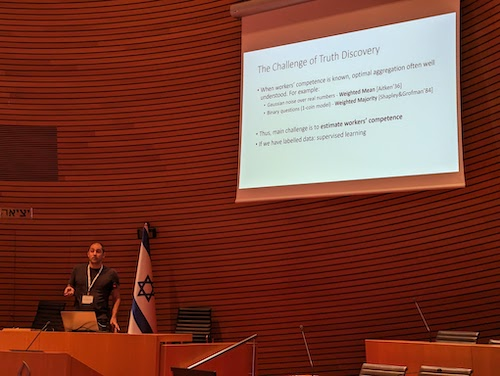 | 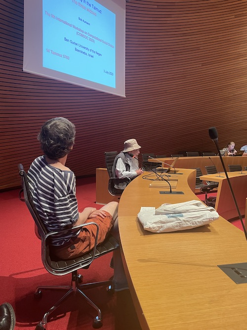 | 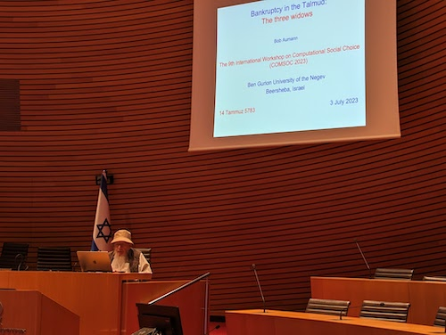 | 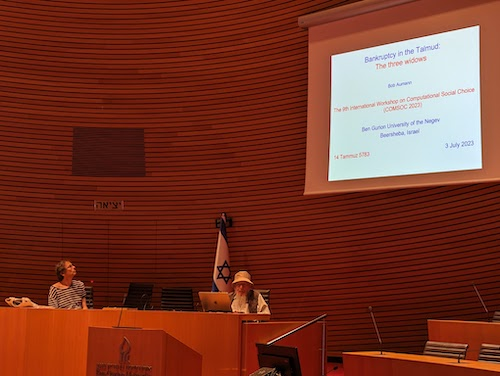 |
| 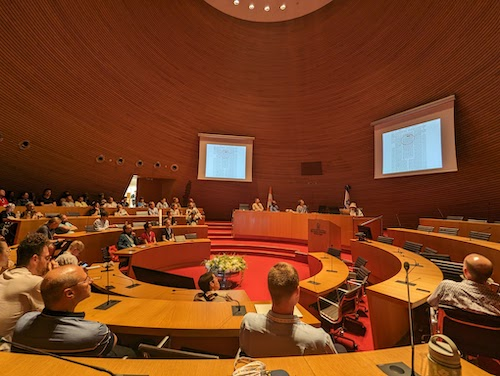 | 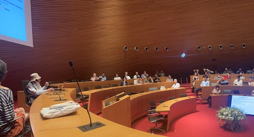 | 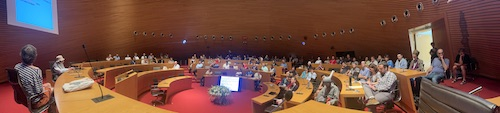 | 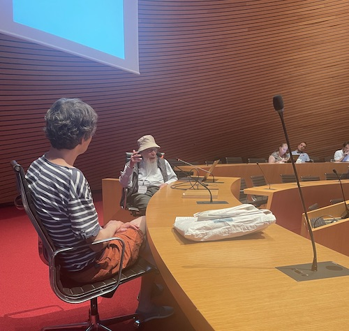 | 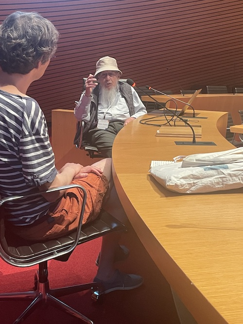 |
 |
 |
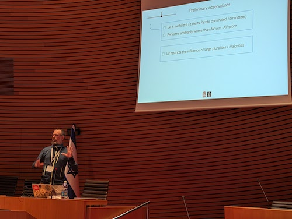 | 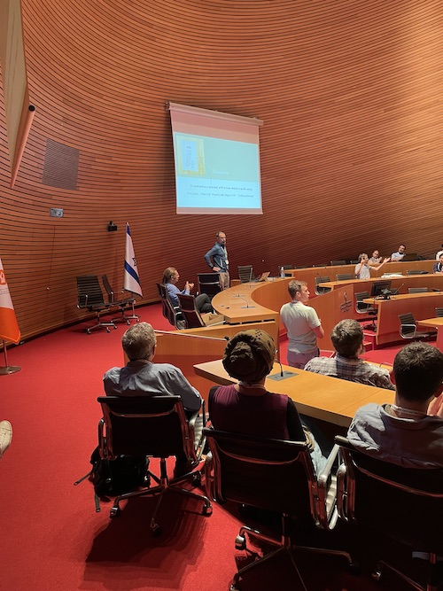 | 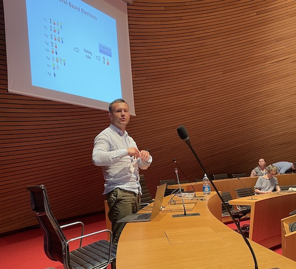 |
| 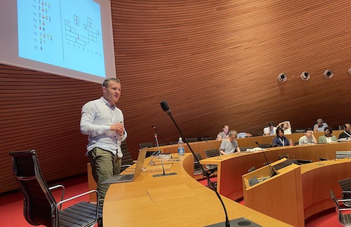 | 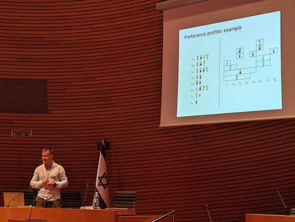 | 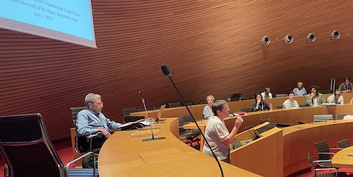 | 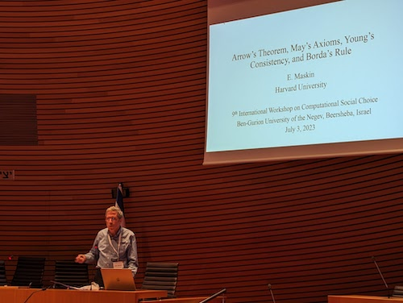 | 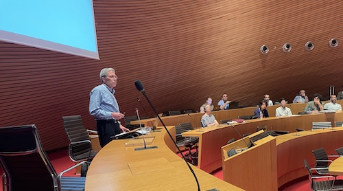 |
| 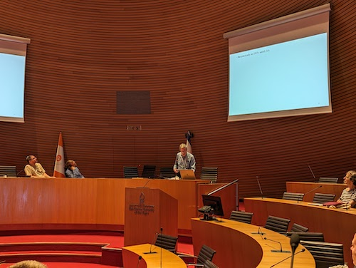 | 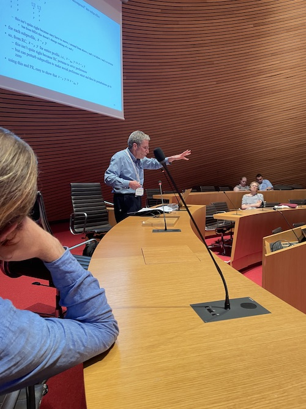 | 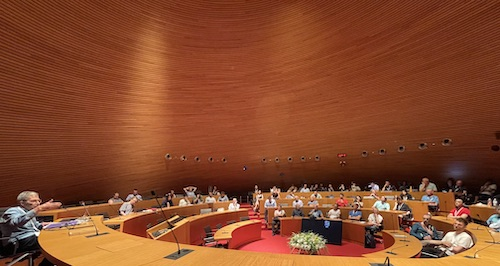 | 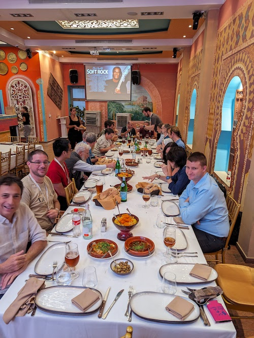 | |
 |
||||
 |
||||
 |
||||
{kind=link}
{kind=link}
{kind=link}
{kind=link}
{kind=link}
{kind=link}
{kind=link}
{kind=link}
{kind=link}
{kind=link}
{kind=link}
{kind=link}
{kind=link}
{kind=link}
{kind=link}
{kind=link}
{kind=link}
{kind=link}
{kind=link}
{kind=link}
{kind=link}
{kind=link}
{kind=link}
{kind=link}
{kind=link}
{kind=link}
{kind=link}
{kind=link}
{kind=link}
{kind=link}
{kind=link}
{kind=link}
{kind=link}
{kind=link}
{kind=link}
{kind=link}
{kind=link}
{kind=link}
{kind=link}
{kind=link}
{kind=link}
{kind=link}
{kind=link}
{kind=link}
{kind=link}
{kind=link}
{kind=link}
{kind=link}
{kind=link}
{kind=link}
{kind=link}
{kind=link}
{kind=link}
{kind=link}
{kind=link}
{kind=link}
{kind=link}
{kind=link}
{kind=link}
{kind=link}
{kind=link}
{kind=link}
{kind=link}
{kind=link}
{kind=link}
{kind=link}
{kind=link}
{kind=link}
{kind=link}
{kind=link}
{kind=link}
{kind=link}
{kind=link}
{kind=link}
{kind=link}
{kind=link}
{kind=link}
{kind=link}
{kind=link}
{kind=link}
{kind=link}
{kind=link}
{kind=link}
{kind=link}
{kind=link}
{kind=link}
{kind=link}
{kind=link}
{kind=link}
{kind=link}
{kind=link}
{kind=link}
{kind=link}
{kind=link}
{kind=link}
{kind=link}
{kind=link}
{kind=link}
{kind=link}
{kind=link}
{kind=link}
{kind=link}
{kind=link}
{kind=link}
{kind=link}
{kind=link}
{kind=link}
{kind=link}
{kind=link}
{kind=link}
{kind=link}
{kind=link}
{kind=link}
{kind=link}
{kind=link}
{kind=link}
{kind=link}
{kind=link}
{kind=link}
{kind=link}
{kind=link}
{kind=link}
{kind=link}
{kind=link}
{kind=link}
{kind=link}
{kind=link}
{kind=link}
{kind=link}
{kind=link}
{kind=link}
{kind=link}
{kind=link}
{kind=link}
{kind=link}
{kind=link}
{kind=link}
{kind=link}
{kind=link}
{kind=link}
{kind=link}
{kind=link}
{kind=link}
{kind=link}
{kind=link}
{kind=link}
{kind=link}
{kind=link}
{kind=link}
{kind=link}
{kind=link}
{kind=link}
{kind=link}
{kind=link}
{kind=link}
{kind=link}
{kind=link}
{kind=link}
{kind=link}
{kind=link}
{kind=link}
{kind=link}
{kind=link}
{kind=link}
{kind=link}
{kind=link}
{kind=link}
{kind=link}
{kind=link}
{kind=link}
{kind=link}
{kind=link}
{kind=link}
{kind=link}
{kind=link}
{kind=link}
{kind=link}
{kind=link}
{kind=link}
{kind=link}
{kind=link}
Call for Papers
Submissions of papers describing original, under review, or recently published work on all aspects of computational social choice are invited. Topics of interest include, but are not limited to computational issues that arise in the analysis of:
- Voting and collective decision-making
- Axiomatic properties
- Manipulation, control, and bribery
- Voting equilibria and dynamics
- Delegation, proxy voting, and liquid democracy
- Participatory budgeting
- Preference representation and elicitation
- Opinion diffusion and aggregation on social networks
- Peer Evaluation
- Judgement aggregation, belief aggregation, and epistemic voting
- Fair division, allocation, and matching
- Coalition formation
- Recommendation systems
We welcome theoretical, empirical and experimental work on these topics, including, in particular, research on algorithms (exact, approximate, parameterized, online and distributed), learning, logic, and simulations in the context of social choice.
All submitted papers will be reviewed by the program committee. Accepted papers will be collected in informal workshop notes, as the workshop has no formal proceedings and the authors retain their copyright. To accommodate the publishing needs of different scientific communities, we stress that authors will retain the copyright of their papers and that submitting to COMSOC 2023 does not preclude publication of the same material in a journal or in a conference with formal proceedings. Each accepted paper will have to be presented by one of the authors, with the constraint that each workshop participant gives at most one talk (exceptions can be made due to unforeseen circumstances).
Submission Guidelines
Regular papers should not exceed 12 pages in length, excluding references, contact information, acknowledgements, and a clearly-marked appendix of arbitrary length that will be read at the discretion of the PC members. When preparing your submission, please follow these formatting instructions. The easiest way of doing so is to use the Latex typesetting system with the class file comsoc2023.cls. The formatting instructions are based on a sample file (comsoc2023.tex), which you can use as a starting point for your own paper (download full example from here).
Submission is done through CMT: https://cmt3.research.microsoft.com/COMSOC2023. You can revise your submission any number of times before the deadline.
Anonymous Submissions
COMSOC does not require anonymous submissions, but this is allowed (e.g. in case you want to comply with anonymity requirements of other conferences, or for any other reason). In order to support this, the reviewing system is anonymous, but authors can write their names, as is done usually in camera-ready versions. Authors that do not wish to do so will maintain their anonymity.
Program
Monday (July 3rd):
Explaining Decisions in Multi-Agent Environments, Sarit Kraus:
Understanding and accepting decisions made by artificial intelligence (AI) systems is crucial for human collaboration and trust. This importance grows even further in multi-agent environments, where AI systems make decisions based on unknown goals, potentially influenced by the preferences of other agents. In such complex scenarios, explanations become important in increasing user satisfaction and acceptance by considering factors like the system's decision, user preferences, agent preferences, environmental settings, and key attributes such as fairness, envy, and privacy. In this talk, we will explore the concept of Explainable Decisions in Multi-Agent Environments (xMASE) through two cases: constraints-driven optimization problems and explanations for multi-agent Reinforcement Learning (RL) and elucidating preferences. For each case, we propose an algorithm that generates comprehensive explanations. Furthermore, we will report on human experiments that demonstrate the informativeness and acceptability of explanations to users. Lastly, we present preliminary results on formal models for explanations by a mediator, which aim to assist human negotiators in achieving unanimous agreements.
(chaired by Noam Hazon)
-
(chaired by Davide Grossi)
- The Tukey Median as Ex-Ante Condorcet Winner: Klaus Nehring (UC Davis); Clemens Puppe (Karlsruhe Institute of Technology). [paper]
- Finding Possible and Necessary Winners in Spatial Voting with Partial Information: Aviram Imber (Technion); Jonas Israel (TU Berlin); Markus Brill (University of Warwick); Hadas Shachnai (Technion); Benny Kimelfeld (Technion). [paper]
- Non Binary Social Choice: Pierre BARDIER (Ecole Normale Supérieure and Paris School of Economics). [paper]
- Evolutionary Foundation for Heterogeneity in Risk Aversion: Yuval Heller (Bar Ilan University); Ilan Nehama (University of Haifa at Oranim). [paper]
- A Random Dictator Is All You Need: Itai Arieli (Technion); Yakov Babichenko (Technion); Inbal Talgam-Cohen (Technion); Konstantin Zabarnyi (Technion – Israel Institute of Technology). [paper]
- Frustratingly Easy Truth Discovery for Rank Aggregation: Reshef Meir (Technion); Ofra Amir (Technion); Omer Ben-Porat (Technion); Tsviel Ben Shabat (Technion); Gal Cohensius (Technion); Lirong Xia (RPI). [paper]
(chaired by Lihi Dery)
Bankruptcy in the Talmud: The three wives, Robert Yisrael Aumann (joint work with the late Michael Maschler):
retell the Talmudic story of the three wives and its ramifications, stressing the methodological, historical and computational aspects.
(chaired by Jérôme Lang)
-
(chaired by Andrzej Kaczmarczyk)
- Strategy-Proof Participatory Budgeting via a VCG-Like Mechanism: Jonathan Wagner (Technion - Israel Institute of Technology); Reshef Meir (Technion). [paper]
- Limited Voting for More Diversity?: Maaike D Venema-Los (Rijksuniversiteit Groningen); Zoé Christoff (University of Groningen); Davide Grossi (Universiteit van Groningen and University of Amsterdam). [paper]
- Proportionality Degree of Multiwinner Rules: Piotr Skowron (University of Warsaw). [paper]
Arrow’s Theorem, May’s Axioms, and Borda’s Rule, Eric Maskin:
We argue that Arrow’s (1951) independence of irrelevant alternatives condition (IIA) is unjustifiably stringent. Although, in elections, it has the desirable effect of ruling out spoilers (Candidate A spoils the election for B if B beats C when all voters rank A low, but C beats B when some voters rank A high — A splits off support from B), it is stronger than necessary for this purpose. Worse, it makes a voting rule insensitive to voters’ preference intensities. Accordingly, we propose a modified version of IIA to address these problems. Rather than obtaining an impossibility result, we show that a voting rule satisfies modified IIA, Arrow’s other conditions, May’s (1952) axioms for majority rule, and a mild consistency condition if and only if it is the Borda count (Borda 1781), i.e., rank-order voting.
(chaired by Ella Segev)
Tuesday (July 4th):
Social Choice and Likelihood Regions, Itzhak Gilboa:
The aggregation of preferences under uncertainty highlights questions of rationality of the Bayesian approach. Taking the viewpoint that it is sometimes more rational to admit that we do not know a distribution than to pretend we do, one is faced with the question, what is a rational way to select a set of distributions, given a database of observations? We offer an axiomatic approach to this selection problem, yielding likelihood regions: sets of distributions that are monotonic with respect to the likelihood function. Starting with an abstract set of theories, we propose conditions on choice functions (across different databases) for which there exists a statistical model such that the choice function is a likelihood region relative to that model -- for the general case and for the case of a fixed likelihood-ratio threshold. We interpret the results as supporting the notion of likelihood regions for the selection of theories.
(chaired by Ulle Endriss)
-
(chaired by Bill Zwicker)
- Balanced Donor Coordination: Felix Brandt (TU Munich); Matthias Greger (Technical University of Munich); Erel Segal-Halevi (Ariel University); Warut Suksompong (National University of Singapore). [paper]
- Strategic Voting in the Context of Stable-Matching of Teams: Leora Schmerler (Ariel University); Noam Hazon (Ariel University); Sarit Kraus (Bar Ilan University). [paper]
- Asymptotic Existence of Class Envy-free Matchings: Tomohiko Yokoyama (The University of Tokyo); Ayumi Igarashi (University of Tokyo). [paper]
- The Method of Equal Shares for Participatory Budgeting: Dominik Peters (CNRS, Paris Dauphine); Grzegorz Pierczyński (University of Warsaw); Piotr Skowron (University of Warsaw). [paper]
- Proportionality in Approval-Based Participatory Budgeting: Markus Brill (University of Warwick); Stefan Forster (Vienna University of Technology); Martin Lackner (TU Wien); Jan Maly (TU Wien); Jannik Peters (TU Berlin). [paper]
- Participatory Budgeting Designs for the Real World: Roy Fairstein (BGU); Gerdus Benade (Boston University); Kobi Gal (BGU). [paper]
- Properties of the Mallows Model Depending on the Number of Alternatives: A Warning for an Experimentalist: Niclas Boehmer (TU Berlin); Piotr Faliszewski (AGH University); Sonja Kraiczy (University of Oxford). [paper]
- Improving the Perception of Fairness in Shapley-Based Allocations: Meir Nizri (Ariel University); Amos Azaria (Ariel University); Noam Hazon (Ariel University). [paper]
- Learning Preference Distributions From Pairwise Comparisons: Gokcan Tatli (University of Wisconsin-Madison); Yi Chen (University of Wisconsin-Madison); Ramya Korlakai Vinayak (University of Wisconsin-Madison). [paper]
- Efficient Resource Allocation with Secretive Agents: Soroush Ebadian (University of Toronto); Rupert Freeman (University of Virginia); Nisarg Shah (University of Toronto). [paper]
- Envy-free division of multi-layered cakes: Ayumi Igarashi (University of Tokyo); Frédéric Meunier (Ecole Nationale des Ponts). [paper]
- Leximin Approximation: From Single-Objective to Multi-Objective: Eden Hartman (Bar Ilan University); Avinatan Hassidim (Bar Ilan University); Yonatan Aumann (Bar-Ilan University); Erel Segal-Halevi (Ariel University). [paper]
- Social Media and Democracy: Ronen Gradwohl (Ariel University); Yuval Heller (Bar Ilan University); Arye Hillman (Bar Ilan University). [paper]
- Identifying and Eliminating Majority Illusion in Social Networks: Umberto Grandi (IRIT, Université Toulouse Capitole); Lawqueen Kanesh (Indian Institute of Technology Jodhpur); Grzegorz Lisowski (AGH University); Ramanujan Sridharan (University of Warwick); Paolo Turrini (University of Warwick). [paper]
- Proxy Manipulation for Better Outcomes: Gili Bielous (Technion- Israel Institute of Technology); Reshef Meir (Technion). [paper]
(chaired by Martin Bullinger)
(chaired by Reshef Meir)
(chaired by Piotr Skowron)
(chaired by Rica Gonen)
Wednesday (July 5th):
-
(chaired by Edith Elkind)
- Socially Aware Coalition Formation with Bounded Coalition Size: Chaya Levinger (Ariel University); Amos Azaria (Ariel University); Noam Hazon (Ariel University). [paper]
- Core-Stable Committees under Restricted Domains: Grzegorz Pierczyński (University of Warsaw); Piotr Skowron (University of Warsaw). [paper]
- Causes of Stability in Dynamic Coalition Formation: Niclas Boehmer (TU Berlin); Martin Bullinger (Technical University of Munich); Anna Maria Kerkmann (HHU Duesseldorf). [paper]
- Voting behavior in one-shot and iterative multiple referenda: Umberto Grandi (IRIT, Université Toulouse Capitole); Jérôme Lang (CNRS); Ali Özkes (SKEMA); Stephane Airiau (Paris-Dauphine). [paper]
- Fine-Grained Complexity and Algorithms for the Schulze Voting Method: Krzysztof Sornat (IDSIA, USI-SUPSI); Virginia V Vassilevska Williams (MIT); Yinzhan Xu (Massachusetts Institute of Technology). [paper]
- Toward fair and strategyproof tournament rules for tournaments with partially transferable utilities: David Pennock (Rutgers University); Ariel Schvartzman Cohenca (Google Research); Eric Xue (Princeton University). [paper]
- Characterizations of Sequential Valuation Rules: Chris S Dong (Technische Universität München); Patrick Lederer (Technische Universität München).
Refined Characterizations of Approval-Based Committee Scoring Rules: Chris S Dong (Technische Universität München); Patrick Lederer (Technische Universität München). - Properties of Local Search PAV: Sonja Kraiczy (University of Oxford); Edith Elkind (Oxford). [paper]
- Strategyproofness and Proportionality in Party-Approval Multiwinner Elections: Théo Delemazure (Paris Dauphine University); Tom Demeulemeester (KU Leuven); Manuel Eberl (University of Innsbruck); Jonas Israel (TU Berlin); Patrick Lederer (Technische Universität München). [paper]
- Cutsets and EF1 Fair Division of Graphs: William S Zwicker (Union College; Murat Sertel Center for Advanced Economic Studies, Istanbul Bilgi University); Jiehua Chen (TU Wien). [paper]
- Repeated Fair Allocation of Indivisible Items: Ayumi Igarashi (University of Tokyo); Martin Lackner (TU Wien); Oliviero Nardi (DBAI, TU Wien); Arianna Novaro (CES, Université Paris 1 Panthéon-Sorbonne). [paper]
- Improved EFX approximation guarantees under ordinal-based assumptions: Evangelos Markakis (Athens University of Economics and Business); Christodoulos Santorinaios (Athens University of Economics and Business). [paper]
- Social Mechanism Design: Making Maximally Acceptable Decisions: Ben Abramowitz (Tulane University); Nicholas Mattei (Tulane University). [paper]
- Diversity, Agreement, and Polarization in Elections: Piotr Faliszewski (AGH University); Andrzej Kaczmarczyk (AGH University); Krzysztof Sornat (IDSIA, USI-SUPSI); Stanisław Szufa (AGH University); Tomasz Wąs (Pennsylvania State University). [paper]
- Spoiler Susceptibility in Party Elections: Daria Boratyn (Jagiellonian University, Center for Quantitative Political Science); Dariusz Stolicki (Jagiellonian University, Center for Quantitative Political Science); Wojciech Słomczyński (Jagiellonian University); Stanisław Szufa (AGH University). [paper]
- Host Community Respecting Refugee Housing: Dušan Knop (Czech Technical University in Prague); Šimon Schierreich (Czech Technical University in Prague). [paper]
- Mitigating Skewed Bidding for Conference Paper Assignment: Inbal Rozencweig (Technion); Reshef Meir (Technion); Nicholas Mattei (Tulane University); Ofra Amir (Technion). [paper]
- Towards a Characterization of Random Serial Dictatorship: Felix Brandt (TU Munich); Matthias Greger (Technical University of Munich); René Romen (TU Munich). [paper]
(chaired by Nimrod Talmon)
(chaired by Federico Fioravanti)
(chaired by Rupert Freeman)
(chaired by Jan Maly)
(chaired by Piotr Faliszewski)
Monday (July 3rd) Posters
- Fairness in Temporal Slot Assignment: Edith Elkind (Oxford); Sonja Kraiczy (University of Oxford); Nicholas Teh (University of Oxford). [paper]
- Heuristics for Opinion Diffusion via Local Elections: Rica Gonen (OUI); Martin Koutecky (Charles University); roei menashof (The Open university of Israel); Nimrod Talmon (). [paper]
- Ascending-Price Mechanism for General Multi-Sided Markets: Dvir Gilor (The Open University of Israel); Rica Gonen (OUI); Erel Segal-Halevi (Ariel University). [paper]
- Influencing Games Through DRL: Colin Brady (OUI); Rica Gonen (OUI); Genadi Rabinovich (OUI). [paper]
- Structure of single-peaked preferences: Alexander Karpov (HSE University). [paper]
- False-name-proof and Strategy-proof Voting Rules under Separable Preferences: "Federico Fioravanti (Institute for Logic, Language and Computation); Jordi Massó (Universitat Autónoma de Barcelona)". [paper]
- Fair Rent Division on a Budget Revisited: "Stephane Airiau (Paris-Dauphine); Hugo Gilbert (LAMSADE, Université Paris-Dauphine); Umberto Grandi (IRIT, Université Toulouse Capitole); Jérôme Lang (CNRS); Anaëlle Wilczynski (CentraleSupélec)". [paper]
- Ties in Multiwinner Approval Voting: Łukasz Janeczko (AGH University of Krakow); Piotr Faliszewski (AGH University). [paper]
- On fair allocation of indivisible goods to submodular agents: Gilad Ben Uziahu (Weizmann institute of science); Uriel Feige (Weizmann Institute). [paper]
- The Leximin Approach for a Sequence of Collective Decisions: Ido Kahana (Ariel University); Noam Hazon (Ariel University). [paper]
- When and How to Have Negative Regrets for Online Learners? Profits for Prediction Market Makers as an Example: "Po-An Chen (National Yang Ming Chiao Tung University); Chi-Jen Lu (Academia Sinica); Chuang-Chieh Lin (Department of Computer Science and Information Engineering, Tamkang University); Yu-Qin Lin (National Yang Ming Chiao Tung University)". [paper]
- Fair division with splitting: Samuel Bismuth (Ariel university); Vladislav Makarov (St. Petersburg State University); Erel Segal-Halevi (Ariel University); Dana Shapira (Ariel University). [paper]
- "Forming a ranking from tied evaluations: a case of an online, interactive student peer assessment system": Lihi Dery (Ariel University). [paper]
- Election control for VCR Euclidean preferences: Michał T Godziszewski (University of Warsaw); Jan Sznajd (CERN). [paper]
- Learning Preference Distributions From Distance Measurements: "Gokcan Tatli (University of Wisconsin-Madison); Robert Nowak (University of Wisconsin, Madison); Ramya Korlakai Vinayak (University of Wisconsin-Madison)". [paper]
Tuesday (July 4th) Posters
- Participatory Budgeting: Data, Tools and Analysis: Piotr Faliszewski (AGH University); Jarosław Flis (Jagiellonian University in Krakow); Dominik Peters (CNRS, Paris Dauphine); Grzegorz Pierczyński (University of Warsaw); Piotr Skowron (University of Warsaw); Dariusz Stolicki (Jagiellonian University, Center for Quantitative Political Science); Stanisław Szufa (AGH University); Nimrod Talmon (Ben Gurion University). [paper]
- Reputation-based Persuasion Platforms: Itai Arieli (Technion); Omer Madmon (Technion); Moshe Tennenholtz (Technion – Israel Institute of Technology). [paper]
- Stable Dinner Party Seating Arrangements: Damien Berriaud (ETH Zurich); Andrei Constantinescu (ETH Zurich); Roger Wattenhofer (ETH Zurich). [paper]
- Nonparametric Methods for Detecting Gerrymandering in Multiparty Elections: "Dariusz Stolicki (Jagiellonian University, Center for Quantitative Political Science); Wojciech Słomczyński (Jagiellonian University); Stanisław Szufa (AGH University)". [paper]
- Designing binary social decisions: Margarita Kirneva (Ecole Polytechnique); Matias Nuñez (Ecole Polytechnique). [paper]
- Proportionality Guarantees in Elections with Interdependent Issues: Markus Brill (University of Warwick); Evangelos Markakis (Athens University of Economics and Business); Georgios Papasotiropoulos (Athens University of Economics and Business); Jannik Peters (TU Berlin). [paper]
- Condorcet Markets: Stephane Airiau (Paris-Dauphine); Nicholas Kees Dupuis (Independent researcher); Davide Grossi (Universiteit van Groningen and University of Amsterdam). [paper]
- Near-Tight Algorithms for the Chamberlin-Courant and Thiele Voting Rules: "Krzysztof Sornat (IDSIA, USI-SUPSI); Virginia V Vassilevska Williams (MIT); Yinzhan Xu (Massachusetts Institute of Technology)". [paper]
- Simultaneous manipulation under incomplete information: Yuliya A. Veselova (NRU HSE); Daniel Karabekyan (National Research University Higher School of Economics ). [paper]
- Designing egalitarian weighted voting games: Fan Wu (Independent). [paper]
- Polarization as Probabilistic Dependence: Luke Thorburn (King's College London); Maria Polukarov (King's College London); Carmine Ventre (King's College London). [paper]
- Algorithmics of Egalitarian versus Equitable Sequences of Committees: Eva Deltl (Technical University of Berlin); Till Fluschnik (TU Berlin); Robert Bredereck (TU Clausthal). [paper]
- On the nucleolus of irreducible minimum cost spanning tree games: Leanne Streekstra (University of Hagen). [paper]
- Dynamic Fairness-Aware Recommendation through Multi-Agent Social Choice: Amanda Aird (University of Colorado: Boulder); Paresha Farastu (University of Colorado: Boulder); Joshua Sun (University of Colorado: Boulder); Amy Voida (University of Colorado: Boulder); Nicholas Mattei (Tulane University); Robin Burke ( University of Colroado Boulder). [paper]
Call for Posters
Beyond the papers submitted to COMSOC, we allow attendees to bring posters and present research. This might be connected to new research that only crystalized following the workshop deadline, or some other research that was not submitted for some reason, but is still relevant to computational social choice researchers.
We only ask that presenters register in advance, so we know how many posters we need to prepare.
If your submitted paper was accepted as a poster, you do not need to register in this method.
To register, fill the information in this link.
Poster Competition
We will be holding a poster competition amongst all posters -- both accepted ones and in the free-for-all session -- to encourage good, engaging posters.
Poster Feedback
For those who want, we now offer (thanks to Reshef Meir) free feedback on the design of your poster, before printing. Use this form, upload your poster, and we will try to get back to you with recommendations (student posters are prioritized). Expect critical (and potentially snarky, particularly for text-heavy posters) comments, but which aim to be constructive and help you improve your posters. Please take into account that sending you the feedback may take a while, so do not ask for it at the last minute.
Printing Posters
You can bring your own posters, but if you want, you can print your posters at a printer near Ben-Gurion University, and it can wait for you here. COMSOC organizers and Ben-Gurion university are not affiliated with it, but it is a printer often used to print posters by Ben-Gurion University students and professors. The printer is called "DahnoGraph", and it prints a 90 cm x 120cm laminated poster for 88 NIS (about US$24) (you can also print on cloth, but that is pricier). Printing takes about a week, so do not wait to the last minute to send your poster!
You need to email a PDF (and ONLY a PDF file) to the email address dgraphprint@gmail.com, and specify that you would like the poster delivered to "Ben-Gurion University, Department of Industrial Engineering and Management, Building 16, Room 147". Following the email, you need to call them by phone to give your credit card number for payment, at (+972)-8-6271848 or (+972)-8-6235127. They suggest calling them about 20 minutes after sending the file, so they would have already received the email.
Invited Speakers
Robert Aumann is a Professor of Mathematics at the Hebrew University of Jerusalem, and one of the founders of the Center for Rationality at the Hebrew University. He is one of the world's leading game theorists, and the author of almost a hundred scientific papers and six books. He is a member of the American Academy of Arts and Sciences, the National Academy of Sciences, the British Academy, the Academia Europaea and the Israel Academy of Sciences and Humanities; holds honorary doctorates from the Universities of Chicago, Bonn, Louvain, City University of New York, Bar Ilan University, Ben Gurion University of the Negev, and the University of Paris II; and has received numerous prizes, including the Nobel Memorial Prize in Economic Sciences for 2005 for his work on repeated games.
Itzhak Gilboa holds the AXA Chair in Decision Sciences at the École des Hautes Études Commerciales (HEC) Paris, as well as the Chair of Economic Theory and Decision Theory at Tel-Aviv University. He works in decision theory and other fields in economic theory such as game theory and social choice. His main research areas are decision under uncertainty, focusing on the definition of probability, notions of rationality, non-Bayesian decision models, and related issues. He is a Fellow of the Cowles Foundation for Research in Economics at Yale University, a Fellow of the Society for the Advancement of Economic Theory, a Member of Council of the Econometric Society, and an International Honorary Member of the American Academy of Arts and Sciences.
Sarit Kraus is a Professor of Computer Science at Bar-Ilan University. Her research focuses on intelligent agents and multi-agent systems ---particularly the design of intelligent agents that can interact proficiently with people, in both cooperative and conflicting scenarios. Her work combines methods from Machine Learning, Decision Theory and Game Theory, non-classical logic, optimization under uncertainty and psychology. Kraus was awarded the IJCAI Computers and Thought Award, ACM SIGART Agents Research award, ACM Athena Lecturer, the EMET prize and was twice the winner of the IFAAMAS influential paper award. She is AAAI, ECCAI and ACM fellow and a recipient of the advanced ERC grant. She is a member of The Israel Academy of Sciences and Humanities.
Eric Maskin is the Adams University Professor and Professor of Economics and Mathematics at Harvard, and was previously the Albert O. Hirschman Professor of Social Science at the Institute for Advanced Study. He has made contributions to game theory, contract theory, social choice theory, political economy, and other areas of economics, and the author of more than 140 scientific papers and five books. He is a Fellow of the American Academy of Arts and Sciences, Econometric Society, Game Theory Society, and the European Economic Association, and a Corresponding Fellow of the British Academy, and a past president of the Econometric Society. He holds honorary doctorates from the University of Cambridge, the Hebrew University of Jerusalem, Corvinus University of Budapest, Université Libre de Bruxelles, and Georgetown University, among others. In 2007, he was awarded the Nobel Memorial Prize in Economics for laying the foundations of mechanism design theory.
PC Chairs
Marcus Pivato, CY Cergy Paris Université; marcus.pivato@cyu.fr
Omer Lev, Ben-Gurion University of the Negev; omerlev@bgu.ac.il
Program Committee
- Alan D. Miller, Western University.
- Alan Tsang, Carleton University.
- Andreas Darmann, University of Graz.
- Ariel D. Procaccia, Harvard University.
- Ariel Rosenfeld, Bar-Ilan University.
- Ayumi Igarashi, The University of Tokyo.
- Bart de Keijzer, King's College London.
- Benny Kimelfeld, Technion.
- David Pennock, Rutgers University.
- Davide Grossi, Universiteit van Groningen and University of Amsterdam.
- Dominik Peters, CNRS, Paris Dauphine.
- Dorothea Baumeister, Federal University of Applied Administrative Sciences.
- Edith Elkind, Oxford.
- Erel Segal-Halevi, Ariel University.
- Felix Brandt, Technical University of Munich.
- Florian Brandl, Stanford University.
- Ildiko Schlotter, Budapest University of Technology.
- Jean-Guy Mailly, Université Paris Cité.
- Jérôme Lang, CNRS.
- Jiehua Chen, TU Wien.
- Joerg Rothe, HHU Duesseldorf.
- Judy Goldsmith, University of Kentucky.
- Katarína Cechlárová, P.J. Safarik University, Institute of Mathematics.
- Kate Larson, University of Waterloo.
- Kristen Brent Venable, IHMC.
- Lirong Xia, RPI.
- Maria Polukarov, King's College London.
- Markus Brill, University of Warwick.
- Martin Lackner, TU Wien.
- Matias Nunez, Ecole Polytechnique, CREST.
- Nathan Arnold, University of Kentucky.
- Neeldhara Misra, IIT Gandhinagar.
- Nicholas Mattei, Tulane University.
- Nicolas Maudet, Sorbonne Université.
- Nimrod Talmon, Ben Gurion University.
- Noam Hazon, Ariel University.
- Omer Ben-Porat, Technion.
- Palash Dey, Indian Institute of Technology Kharagpur.
- Paolo Turrini, University of Warwick.
- Paul W. Goldberg, University of Oxford.
- Peter Biro, Hungarian Academy of Sciences.
- Piotr Faliszewski, AGH University.
- Piotr Skowron, University of Oxford.
- Reshef Meir, Technion.
- Rica Gonen, OUI.
- Ronald de Haan, University of Amsterdam.
- Rupert Freeman, University of Virginia.
- Ruth Ben-Yashar, Bar-Ilan university.
- Samuel Bismuth, Ariel university.
- Serge Gaspers, UNSW.
- Simina Branzei, Purdue University.
- Stephane Airiau, Paris-Dauphine.
- Thomas E. Allen, Centre College.
- Ulle Endriss, University of Amsterdam.
- Umberto Grandi, IRIT, University of Toulouse.
- Vincent Merlin, University of Caen.
- Warut Suksompong, National University of Singapore.
- William S. Zwicker, Union College; Murat Sertel Center for Advanced Economic Studies, Istanbul Bilgi University.
- Yair Zick, University of Massachusetts, Amherst.
- Yonatan Aumann, Bar-Ilan University.
- Yongjie Yang, Chair of Economic Theory, Saarland University, Saarbrücken.
- Yuval filmus, Technion.
- Zack Fitzsimmons, College of the Holy Cross.
Visa Requirement
Visitors from most OECD countries are exempt from visitor visa. See full list here.
If you require a visa to enter, please see the details in the Israeli government page. Several countries without diplomatic relations with Israel require special Foreign Ministry confirmation to issue a visa, requiring a formal invitation (which we can provide). Please contact Omer Lev to request one.
Location
The workshop will be held at Ben-Gurion University main campus in Beersheba. The campus sits next to an Israel Railways train station: Be'er Sheva North-University. This allows to reach it from Tel-Aviv with a 65 minute ride, from Jerusalem with a 2 hour ride (including time to switch trains in one of the Tel-Aviv trains stations), as well as directly from Ben-Gurion Airport within 105 minutes (this also requires switching trains at Tel-Aviv).
For further details on reaching the university, including by car or bus, see in this information page (see info for the Marcus Family campus). For those interested, we offer a car-pool coordination spreadsheet here.
Please note that there is no public transportation in Israel from sundown Friday to sundown Saturday. Please check specific services for precise hours (some services do not operate on Saturdays at all, and some stop early on Friday).
Where in the campus?
The workshop will be at the Senate hall. It is in building 71 on campus, which is circled in the map of the campus, below (notice the map includes the railway station as well, for those coming by train)
The Senate hall itself is in the -1 level (so just below street level), and while the building has many entrances, the easiest one, leading directly to our hall, is using the stairs shown in the picture below.
Accommodation
Due to the proximity to the train station, some may choose to stay in Tel-Aviv or elsewhere in Israel. In any case, there are rooms near the campus, where COMSOC will be held:
- UTel: A university owned small semi-hotel for guests of the university (it has no breakfast option). Room prices can be seen in the link, but range from 320 NIS (approximately $90) per day for a single room to 480 NIS (approximately $132) for a deluxe double room (there are no rooms with 2 single beds). Due to the university bureaucracy, the order needs to be made by a university faculty member, though payment is handled directly between UTel and you. Please fill out the form, which will allow us to initiate the process between you and the UTel, and they will send you the payment link (which might be a bit flaky). Note that there are very few rooms, so please only fill out the form if you know you want the room.
Form: https://forms.gle/QvLmHVjkMGU9MZYt6. - Habait Be Matityahu: Apartments near campus.
- Leonardo Negev: A large-chain hotel, located 30 minute walk from the Ben-Gurion campus (less than 20 minutes by bus). It is an older hotel but has plenty of rooms. They offer COMSOC attendees 15% discount on their stay from July 1st to July 8th. In order to get this discount, attendees should enter the promo code COMSOC before completing their booking.
Registration
Registration is $70 (or ₪255 for Israelis). It includes lunch for all days as well as the conference dinner. Registration is non-refundable.
Now that registration time has passed, registration now no longer includes lunch or the banquet (those can be paid separately), only participation.
However if you are a student and an author of a paper or poster that was accepted to the workshop (i.e., appear here) from outside Israel, you do not need to pay, but you still need to register: we hope to be able to give international student authors some money to help with travel expenses, so you need to register and mark this clearly in the form.
If you are an Israeli student, we offer you the option of free registration, but without access to the workshop lunches and the workshop dinner. So you will need to provide your own food. But you still need to register to attend!
Registration link: https://forms.gle/rcXuSzFmKyvtkfk3A
In addition, Reshef Meir is organizing a trip in Israel following the workshop. It is not affiliated with the workshop, but we are happy to connect those interesting. To join, write him at: reshefm@ie.technion.ac.il, or join the WhatsApp group at https://chat.whatsapp.com/CMEPDBS8PMgKJa6LpHRD33.
Accepted Papers
- Social Media and Democracy: Ronen Gradwohl (Ariel University); Yuval Heller (Bar Ilan University); Arye Hillman (Bar Ilan University).
- Balanced Donor Coordination: Felix Brandt (TU Munich); Matthias Greger (Technical University of Munich); Erel Segal-Halevi (Ariel University); Warut Suksompong (National University of Singapore).
- Evolutionary Foundation for Heterogeneity in Risk Aversion: Yuval Heller (Bar Ilan University); Ilan Nehama (University of Haifa at Oranim).
- Universally Robust Information Aggregation for Binary Decisions: Itai Arieli (Technion); Yakov Babichenko (Technion); Inbal Talgam-Cohen (Technion); Konstantin Zabarnyi (Technion – Israel Institute of Technology).
- Characterizations of Sequential Valuation Rules: Chris S Dong (Technische Universität München); Patrick Lederer (Technische Universität München).
- Refined Characterizations of Approval-Based Committee Scoring Rules: Chris S Dong (Technische Universität München); Patrick Lederer (Technische Universität München).
- Host Community Respecting Refugee Housing: Dušan Knop (Czech Technical University in Prague); Šimon Schierreich (Czech Technical University in Prague).
- Social Mechanism Design: Making Maximally Acceptable Decisions: Ben Abramowitz (Tulane University); Nicholas Mattei (Tulane University).
- Participatory Budgeting: Data, Tools and Analysis: Piotr Faliszewski (AGH University); Jarosław Flis (Jagiellonian University in Krakow); Dominik Peters (CNRS, Paris Dauphine); Grzegorz Pierczyński (University of Warsaw); Piotr Skowron (University of Warsaw); Dariusz Stolicki (Jagiellonian University, Center for Quantitative Political Science); Stanisław Szufa (AGH University); Nimrod Talmon (Ben Gurion University).
- Identifying and Eliminating Majority Illusion in Social Networks: Umberto Grandi (IRIT, Université Toulouse Capitole); Lawqueen Kanesh (Indian Institute of Technology Jodhpur); Grzegorz Lisowski (AGH University); Ramanujan Sridharan (University of Warwick); Paolo Turrini (University of Warwick).
- Proportionality in Approval-Based Participatory Budgeting: Markus Brill (University of Warwick); Stefan Forster (Vienna University of Technology); Martin Lackner (TU Wien); Jan Maly (TU Wien); Jannik Peters (TU Berlin).
- The Tukey Median as Ex-Ante Condorcet Winner: Klaus Nehring (UC Davis); Clemens Puppe (Karlsruhe Institute of Technology).
- Cutsets and EF1 Fair Division of Graphs: William S Zwicker (Union College; Murat Sertel Center for Advanced Economic Studies, Istanbul Bilgi University); Jiehua Chen (TU Wien).
- Efficient Resource Allocation with Secretive Agents: Soroush Ebadian (University of Toronto); Rupert Freeman (University of Virginia); Nisarg Shah (University of Toronto).
- Diversity, Agreement, and Polarization in Elections: Piotr Faliszewski (AGH University); Andrzej Kaczmarczyk (AGH University); Krzysztof Sornat (IDSIA, USI-SUPSI); Stanisław Szufa (AGH University); Tomasz Wąs (Pennsylvania State University).
- Properties of the Mallows Model Depending on the Number of Alternatives: A Warning for an Experimentalist: Niclas Boehmer (TU Berlin); Piotr Faliszewski (AGH University); Sonja Kraiczy (University of Oxford).
- Repeated Fair Allocation of Indivisible Items: Ayumi Igarashi (University of Tokyo); Martin Lackner (TU Wien); Oliviero Nardi (DBAI, TU Wien); Arianna Novaro (CES, Université Paris 1 Panthéon-Sorbonne).
- Frustratingly Easy Truth Discovery for Rank Aggregation: Reshef Meir (Technion); Ofra Amir (Technion); Omer Ben-Porat (Technion); Tsviel Ben Shabat (Technion); Gal Cohensius (Technion); Lirong Xia (RPI).
- Mitigating Skewed Bidding for Conference Paper Assignment: Inbal Rozencweig (Technion); Reshef Meir (Technion); Nicholas Mattei (Tulane University); Ofra Amir (Technion).
- Social Aware Coalition Formation with Bounded Coalition Size: Chaya Levinger (Ariel University); Amos Azaria (Ariel University); Noam Hazon (Ariel University).
- Voting behavior in one-shot and iterative multiple referenda: Umberto Grandi (IRIT, Université Toulouse Capitole); Jérôme Lang (CNRS); Ali Özkes (SKEMA); Stephane Airiau (Paris-Dauphine).
- Finding Possible and Necessary Winners in Spatial Voting with Partial Information: Aviram Imber (Technion); Jonas Israel (TU Berlin); Markus Brill (University of Warwick); Hadas Shachnai (Technion); Benny Kimelfeld (Technion).
- Strategic Voting in the Context of Stable-Matching of Teams: Leora Schmerler (Ariel University); Noam Hazon (Ariel University); Sarit Kraus (Bar Ilan University).
- Improving the Perception of Fairness in Shapley-Based Allocations: Meir Nizri (Ariel University); Amos Azaria (Ariel University); Noam Hazon (Ariel University).
- Core-Stable Committees under Restricted Domains: Grzegorz Pierczyński (University of Warsaw); Piotr Skowron (University of Warsaw).
- Fine-Grained Complexity and Algorithms for the Schulze Voting Method: Krzysztof Sornat (IDSIA, USI-SUPSI); Virginia V Vassilevska Williams (MIT); Yinzhan Xu (Massachusetts Institute of Technology).
- Participatory Budgeting Designs for the Real World: Roy Fairstein (BGU); Gerdus Benade (Boston University); Kobi Gal (BGU).
- Learning Preference Distributions From Pairwise Comparisons: Gokcan Tatli (University of Wisconsin-Madison); Yi Chen (University of Wisconsin-Madison); Ramya Korlakai Vinayak (University of Wisconsin-Madison).
- Properties of Local Search PAV: Sonja Kraiczy (University of Oxford); Edith Elkind (Oxford).
- Toward fair and strategyproof tournament rules for tournaments with partially transferable utilities: David Pennock (Rutgers University); Ariel Schvartzman Cohenca (Google Research); Eric Xue (Princeton University).
- Strategy-Proof Participatory Budgeting via a VCG-Like Mechanism: Jonathan Wagner (Technion - Israel Institute of Technology); Reshef Meir (Technion).
- Envy-free division of multi-layered cakes: Ayumi Igarashi (University of Tokyo); Frédéric Meunier (Ecole Nationale des Ponts).
- Asymptotic Existence of Class Envy-free Matchings: Tomohiko Yokoyama (The University of Tokyo); Ayumi Igarashi (University of Tokyo).
- Limited Voting for More Diversity?: Maaike D Venema-Los (Rijksuniversiteit Groningen); Zoé Christoff (University of Groningen); Davide Grossi (Universiteit van Groningen and University of Amsterdam).
- Causes of Stability in Dynamic Coalition Formation: Niclas Boehmer (TU Berlin); Martin Bullinger (Technical University of Munich); Anna Maria Kerkmann (HHU Duesseldorf).
- Leximin Approximation: From Single-Objective to Multi-Objective: Eden Hartman (Bar Ilan University); Avinatan Hassidim (Bar Ilan University); Yonatan Aumann (Bar-Ilan University); Erel Segal-Halevi (Ariel University).
- Spoiler Susceptibility in Party Elections: Daria Boratyn (Jagiellonian University, Center for Quantitative Political Science); Dariusz Stolicki (Jagiellonian University, Center for Quantitative Political Science); Wojciech Słomczyński (Jagiellonian University); Stanisław Szufa (AGH University).
- Improved EFX approximation guarantees under ordinal-based assumptions: Evangelos Markakis (Athens University of Economics and Business); Christodoulos Santorinaios (Athens University of Economics and Business).
- Proxy Manipulation for Better Outcomes: Gili Bielous (Technion- Israel Institute of Technology); Reshef Meir (Technion).
- Towards a Characterization of Random Serial Dictatorship: Felix Brandt (TU Munich); Matthias Greger (Technical University of Munich); René Romen (TU Munich).
- Strategyproofness and Proportionality in Party-Approval Multiwinner Elections: Théo Delemazure (Paris Dauphine University); Tom Demeulemeester (KU Leuven); Manuel Eberl (University of Innsbruck); Jonas Israel (TU Berlin); Patrick Lederer (Technische Universität München).
- Non Binary Social Choice: Pierre BARDIER (Ecole Normale Supérieure and Paris School of Economics).
- The Method of Equal Shares for Participatory Budgeting: Dominik Peters (CNRS, Paris Dauphine); Grzegorz Pierczyński (University of Warsaw); Piotr Skowron (University of Warsaw).
- Proportionality Degree of Multiwinner Rules: Piotr Skowron (University of Warsaw).
Accepted Posters
- Fairness in Temporal Slot Assignment: Edith Elkind (Oxford); Sonja Kraiczy (University of Oxford); Nicholas Teh (University of Oxford).
- Heuristics for Opinion Diffusion via Local Elections: Rica Gonen (OUI); Martin Koutecky (Charles University); Roei Menashof (The Open university of Israel); Nimrod Talmon (Ben Gurion University).
- Ascending-Price Mechanism for General Multi-Sided Markets: Dvir Gilor (The Open University of Israel); Rica Gonen (OUI); Erel Segal-Halevi (Ariel University).
- Influencing Games Through DRL: Colin Brady (OUI); Rica Gonen (OUI); Genadi Rabinovich (OUI).
- Structure of single-peaked preferences: Alexander Karpov (HSE University).
- False-name-proof and Strategy-proof Voting Rules under Separable Preferences: Federico Fioravanti (Institute for Logic, Language and Computation); Jordi Massó (Universitat Autónoma de Barcelona).
- Participatory Budgeting: Data, Tools and Analysis: Piotr Faliszewski (AGH University); Jarosław Flis (Jagiellonian University in Krakow); Dominik Peters (CNRS, Paris Dauphine); Grzegorz Pierczyński (University of Warsaw); Piotr Skowron (University of Warsaw); Dariusz Stolicki (Jagiellonian University, Center for Quantitative Political Science); Stanisław Szufa (AGH University); Nimrod Talmon (Ben Gurion University).
- Fair Rent Division on a Budget Revisited: Stephane Airiau (Paris-Dauphine); Hugo Gilbert (LAMSADE, Université Paris-Dauphine); Umberto Grandi (IRIT, Université Toulouse Capitole); Jérôme Lang (CNRS); Anaëlle Wilczynski (CentraleSupélec).
- Ties in Multiwinner Approval Voting: Łukasz Janeczko (AGH University of Krakow); Piotr Faliszewski (AGH University).
- On fair allocation of indivisible goods to submodular agents: Gilad Ben Uziahu (Weizmann institute of science); Uriel Feige (Weizmann Institute).
- The Leximin Approach for a Sequence of Collective Decisions: Ido Kahana (Ariel University); Noam Hazon (Ariel University).
- When and How to Have Negative Regrets for Online Learners? Profits for Prediction Market Makers as an Example: Po-An Chen (National Yang Ming Chiao Tung University); Chi-Jen Lu (Academia Sinica); Chuang-Chieh Lin (Department of Computer Science and Information Engineering, Tamkang University); Yu-Qin Lin (National Yang Ming Chiao Tung University).
- Fair division with splitting: Samuel Bismuth (Ariel university); Vladislav Makarov (St. Petersburg State University); Erel Segal-Halevi (Ariel University); Dana Shapira (Ariel University).
- Forming a ranking from tied evaluations: a case of an online, interactive student peer assessment system: Lihi Dery (Ariel University).
- Election control for VCR Euclidean preferences: Michał T Godziszewski (University of Warsaw); Jan Sznajd (CERN).
- Learning Preference Distributions From Distance Measurements: Gokcan Tatli (University of Wisconsin-Madison); Robert Nowak (University of Wisconsin, Madison); Ramya Korlakai Vinayak (University of Wisconsin-Madison).
- Reputation-based Persuasion Platforms: Itai Arieli (Technion); Omer Madmon (Technion); Moshe Tennenholtz (Technion – Israel Institute of Technology).
- Stable Dinner Party Seating Arrangements: Damien Berriaud (ETH Zurich); Andrei Constantinescu (ETH Zurich); Roger Wattenhofer (ETH Zurich).
- Nonparametric Methods for Detecting Gerrymandering in Multiparty Elections: Dariusz Stolicki (Jagiellonian University, Center for Quantitative Political Science); Wojciech Słomczyński (Jagiellonian University).
- Designing binary social decisions: Margarita Kirneva (Ecole Polytechnique); Matias Nuñez (Ecole Polytechnique).
- Proportionality Guarantees in Elections with Interdependent Issues: Markus Brill (University of Warwick); Evangelos Markakis (Athens University of Economics and Business); Georgios Papasotiropoulos (Athens University of Economics and Business); Jannik Peters (TU Berlin).
- Condorcet Markets: Stephane Airiau (Paris-Dauphine); Nicholas Kees Dupuis (Independent researcher); Davide Grossi (Universiteit van Groningen and University of Amsterdam).
- Near-Tight Algorithms for the Chamberlin-Courant and Thiele Voting Rules: Krzysztof Sornat (IDSIA, USI-SUPSI); Virginia V Vassilevska Williams (MIT); Yinzhan Xu (Massachusetts Institute of Technology).
- Simultaneous manipulation under incomplete information: Yuliya A. Veselova (NRU HSE); Daniel Karabekyan (National Research University Higher School of Economics ).
- Designing egalitarian weighted voting games: Fan Wu (Independent).
- Polarization as Probabilistic Dependence: Luke Thorburn (King's College London); Maria Polukarov (King's College London); Carmine Ventre (King's College London).
- Algorithmics of Egalitarian versus Equitable Sequences of Committees: Robert Bredereck (TU Clausthal); Till Fluschnik (TU Berlin).
- On the nucleolus of irreducible minimum cost spanning tree games: Leanne Streekstra (University of Hagen).
- Dynamic fairness-aware recommendation through multi-agent social choice: Amanda Aird (University of Colorado: Boulder); Paresha Farastu (University of Colorado: Boulder); Joshua Sun (University of Colorado: Boulder); Amy Voida (University of Colorado: Boulder); Nicholas Mattei (Tulane University); Robin Burke (University of Colroado Boulder).